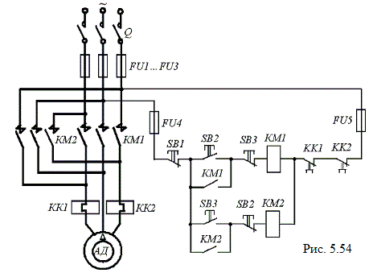

5.6.4.2. Управление реверсивным асинхронным двигателем
Схема автоматического пуска, остановки и реверсирования асинхронного двигателя АД с короткозамкнутым ротором при помощи магнитного пускателя приведена на рис. 5.54. Аппаратура управления и защиты состоит: из реверсивного магнитного пускателя, имеющего два контактора КМ1 и КМ2; кнопок управления SB2 и SB3, посредством которых подаются команды на включение двигателя для вращения в условных направлениях "Вперёд" и "Назад"; кнопки SB1 ("Стоп"), предназначенной для остановки двигателя; тепловых реле КК1 и КК2.

Схема обеспечивает пуск двигателя до частоты вращения, определяемой естественной механической характеристикой и моментом сопротивления Mс на валу, и его остановку под действием момента Mс. Магнитные пускатели широко используются для управления двигателями переменного тока мощностью до 75 кВт, работающими, в основном, в продолжительных или повторно-кратковременных режимах.
Посредством магнитного пускателя осуществляется дистанционное управление пуском, остановкой и реверсированием, а также тепловая (КК1 и КК2) и нулевая (КМ1 и КМ2) защиты двигателя: при значительном снижении напряжения сети или при его исчезновении контактор отключается и отсоединяет двигатель от сети. В схеме также предусмотрена максимально-токовая защита, осуществляемая плавкими предохранителями FU1 … FU5.
При включении рубильника Q схема готова к работе. Нажатием кнопки SB2 (SB3) подают напряжение на катушку контактора КМ1 (КМ2), который срабатывает, замыкает свои главные контакты и присоединяет двигатель к сети. Одновременно замыкается блокировочный контакт КМ1 (КМ2) и шунтируется кнопка SB2 (SB3), что позволяет отпустить кнопку SB2 (SB3), и размыкается блокировочный контакт SB2 (SB3), что не позволяет включить второй контактор КМ2 (КМ1). Для остановки двигателя нажимают кнопку SB1. При этом цепь катушки контактора КМ1 (КМ2) размыкается и его контакты отключают двигатель от сети.
Выключатель (рубильник) Q служит для снятия напряжения с установки после окончания рабочего дня или для производства ремонта. При перегрузке двигателя срабатывают тепловые реле КК1 и КК2, контакты которых КК1 и КК2 размыкают цепь катушки контактора КМ1 (КМ2) и двигатель отключается от сети.
Если требуется только пустить в ход и остановить двигатель, то может быть применён нереверсивный магнитный пускатель, содержащий один линейный контактор КМ1 и тепловую защиту (реле КК1 и КК2).